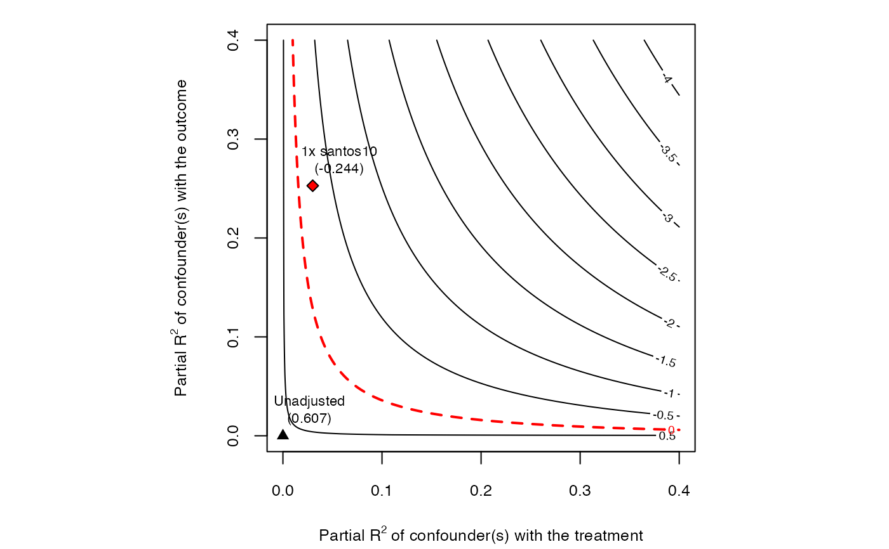

Data on support for the 2016 referendum for peace with the FARC in Colombia, as discussed in Hazlett and Parente (2020).
The main "treatment"
variables are santos2014, which indicates the share of town population voting in support of
Santos in the 2014 Presidential election, and fat_2011to2015_gtd, which indicates
the number of fatalities due to FARC violence between 2011 and 2015, again at the town level.
The main outcome of interest is yes_vote, the proportion (0-100) at the town-level
voting in support of the peace referendum. The question of interest in Hazlett and Parente (2020) is
what can be said about the causal effect of either violence (fatalities) or
of political affiliation with Santos, recognizing that analyses of either cannot
likely rule out all confounding.
colombia
A data frame with 1123 rows and 16 columns.
Name for the provincial level unit, called departments or departmentos, of which there are 32 in the country.
Short code for the department
Name for the town, which is the smallest electoral unit available and is the unit of analysis.
Code for the town.
Total eligible voters in the town
Proportion (out of 100) voting in favor of the peace deal.
Proportion (out of 100) voting for Santos in 2010 presidential election.
Proportion (out of 100) voting for Santos in the 2014 presidential election.
The town-level GDP per capita.
Town-level population in 2013.
Town's mean elevation.
Sum of all known fatalities due to FARC violence in the town (from Global Terrorism Database, GTD).
Sum of fatalities due to FARC in the town in 2001 to 2005 (from GTD).
Sum of fatalities due to FARC in the town in 2006 to 2010 (from GTD).
Sum of fatalities due to FARC in the town in 2011 to 2015 (from GTD).
Sum of fatalities due to FARC in the town in 2010 to 2013 (from GTD).
Hazlett, C., and Parente, F. (2020). "Who supports peace with the FARC? A sensitivity-based approach under imperfect identification"
# loads data data(colombia) #----------------------------------------------------- # Violence Models #----------------------------------------------------- ### Model 1 (bivariate) model1 <- lm(yes_vote ~ fat_2001to2005_gtd, data = colombia) ### Model 2 (more controls, and lagged violence.) model2 <- lm(yes_vote ~ fat_2001to2005_gtd + fat_2006to2010_gtd + fat_2011to2015_gtd + total_eligible + santos10 + gdppc , data = colombia) ### Sensitivity analysis - Model 2, for effect of most recent violence. sense.model2 <- sensemakr(model2, treatment = "fat_2011to2015_gtd", benchmark = "santos10", kd = 1) ### contour plot point estimate plot(sense.model2)#--------------------------------------------- # Political Affiliation Model #--------------------------------------------- ### Model 3: santos2014 as measure of political support for Santos, with control variables. model3 <- lm(yes_vote ~ santos14 + fat_2010to2013 + elev + gdppc + pop13, data = colombia) ### Sensitivity analysis - Model 3 sense.model3 <- sensemakr(model3, treatment = "santos14", benchmark = c("gdppc","elev"), kd = 3) summary(sense.model3)#> Sensitivity Analysis to Unobserved Confounding #> #> Model Formula: yes_vote ~ santos14 + fat_2010to2013 + elev + gdppc + pop13 #> #> Null hypothesis: q = 1 and reduce = TRUE #> -- This means we are considering biases that reduce the absolute value of the current estimate. #> -- The null hypothesis deemed problematic is H0:tau = 0 #> #> Unadjusted Estimates of 'santos14': #> Coef. estimate: 0.6668 #> Standard Error: 0.0178 #> t-value (H0:tau = 0): 37.4551 #> #> Sensitivity Statistics: #> Partial R2 of treatment with outcome: 0.588 #> Robustness Value, q = 1: 0.6779 #> Robustness Value, q = 1, alpha = 0.05: 0.66 #> #> Verbal interpretation of sensitivity statistics: #> #> -- Partial R2 of the treatment with the outcome: an extreme confounder (orthogonal to the covariates) that explains 100% of the residual variance of the outcome, would need to explain at least 58.8% of the residual variance of the treatment to fully account for the observed estimated effect. #> #> -- Robustness Value, q = 1: unobserved confounders (orthogonal to the covariates) that explain more than 67.79% of the residual variance of both the treatment and the outcome are strong enough to bring the point estimate to 0 (a bias of 100% of the original estimate). Conversely, unobserved confounders that do not explain more than 67.79% of the residual variance of both the treatment and the outcome are not strong enough to bring the point estimate to 0. #> #> -- Robustness Value, q = 1, alpha = 0.05: unobserved confounders (orthogonal to the covariates) that explain more than 66% of the residual variance of both the treatment and the outcome are strong enough to bring the estimate to a range where it is no longer 'statistically different' from 0 (a bias of 100% of the original estimate), at the significance level of alpha = 0.05. Conversely, unobserved confounders that do not explain more than 66% of the residual variance of both the treatment and the outcome are not strong enough to bring the estimate to a range where it is no longer 'statistically different' from 0, at the significance level of alpha = 0.05. #> #> Bounds on omitted variable bias: #> #> --The table below shows the maximum strength of unobserved confounders with association with the treatment and the outcome bounded by a multiple of the observed explanatory power of the chosen benchmark covariate(s). #> #> Bound Label R2dz.x R2yz.dx Treatment Adjusted Estimate Adjusted Se Adjusted T #> 3x gdppc 0.0808 0.0316 santos14 0.6374 0.0183 34.8626 #> 3x elev 0.7718 0.0008 santos14 0.6379 0.0373 17.1148 #> Adjusted Lower CI Adjusted Upper CI #> 0.6015 0.6733 #> 0.5648 0.7111